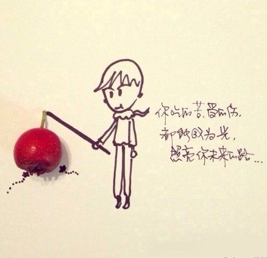

丢了的自己，要记得捡回来
用心甘情愿的态度，过随遇而安的生活
不管昨夜经历了怎样的泣不成声，早晨醒来这个城市依然车水马龙。所谓勇气，就是不断经历失败，但是从不丧失热情。别把自己想的太伟大，要知道，在别人的世界里。不管你做的多好，你都只是个配角而已。
年轻气盛的时候如果被人欺负了，总会恨恨地想以后一定要混出个名堂来，好让人刮目相看。可当真有这么一天的时候，却又想不起去恨了。原来真正的强大是宽容的，不是原谅别人，而是放过自己。人其实挺矛盾的。总是希望被理解，又害怕别人看穿。
有些人，表面温润笑容可掬，却很腹黑，为扳倒你，下得了狠心；有的人，感觉浑身是刺，对你爱搭不理，实际内心甚是善良，关键时帮你陈情。
每个人都有一个死角，自己走不出来，别人也闯不进去，我把最深沉的秘密放在那里，你不懂我，我不怪你。

如果让我回到20，我依旧会选择自己喜欢的男人跟他从零开始享受一段美好的爱情。原因是我到了40知道结果，那些房子汽车，只要我踏实过日子努力工作，不论好坏高低我总会有，但20岁时候的两情相悦年轻的朝气健美的身体，一起挨苦的欢笑与眼泪，那些宝贵的人生经历，过去了，就再不会回来。
往事若能下酒，回忆便是一场宿醉。
真的，生活并不完全是你看到的样子，很多大事情你经历了却并不知道。如果你知道了这些，你大概就不会对现在的得与失太在意了。没错，每个人都不是步步摔跟头的倒霉蛋，更没有人是一帆风顺的命运的宠儿。看淡那些事情，平静而踏实地经历生活的起落，相信你会生活得更好。
男人最酷的时光都在他们还是穷光蛋的时候。疯狂、理想、执着、孤注一掷、大开大合。
有时候，我们等的不是什么人、什么事，我们等的是时间，等时间，让自己改变。
距离常是能够产生美，无间的亲密只会令双方窒息，无论朋友还是爱人，别爱的太近。爱的艺术就像风筝，只有给它风一般的自由，你才会看到它飞舞在蓝天的景致。

丢了的自己，要记得捡回来。
总有一次流泪让我们瞬间长大。没有丢过东西的人，永远不会了解失去的感觉。
出门在外，不论别人给你热脸还是冷脸，都没关系。外面的世界，尊重的是背景、而非人本身。朋友之间，不论热脸还是冷脸，也都没关系。真正的交情，交得是内心、而非脸色。不必过于在意人与人之间一些表面的情绪。挚交之人不需要、泛交之人用不着。“情绪”这东西，你不在乎，它就伤不到你。
有些人的冒犯，不必太在意，也许是你碰到他的时机不太对，同样的人，有时候满嘴污秽，有时候口吐莲花，前者是他在排毒，后者是他在与外界交换能量，所以你要避开他正在吐晦气的时候；就像鸡，同样一个部位，你新奇它能下蛋，但你也要承受它竟然拉屎。
选爱人，要选那个情绪稳定的，波澜不惊的。这样你才不会因为他的大喜或大怒，沮丧或生气而失去自己，把难过长长久久留在心里。
有些人，才遇见一下子，就好像认识了很久似的，什么事都想和他说。
最美的爱情不是天荒也不是地老，只是在一起而已。